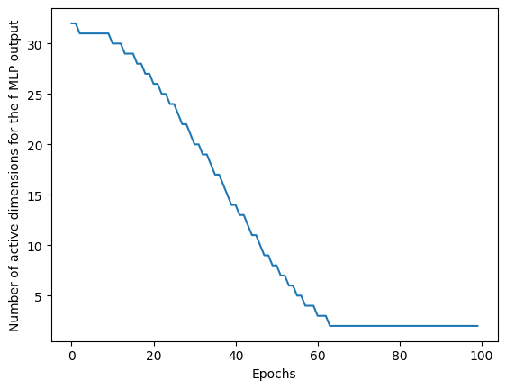

PruningMLP Demo
In this demo we will show you how to:
Wrap a PyTorch model with the
PruningMLPclassSet up a pruning schedule and train the pruning MLP
Perform symbolic regression on a pruned MLP
Pruning Background
For interpretability purposes, it is good to reduce the dimensionality of deep learning models. High-dimensional representations often entangle multiple features, making it difficult to extract clear, human-understandable relationships. By encouraging a sparse representation, we encourage the network to compress information into a smaller set of meaningful components. This may also make symbolic regression possible on these models.
The SymTorch pruning class allows you to dynamically reduce the output dimensionality of MLPs by zero-masking the unimportant dimensions.
Important dimensions: The dimensions that the model uses the most in predicting the output. These would vary most with differences in the input. Hence we choose the important dimensions as the ones with the highest standard deviation across the datapoints.
We pass some input data through the model (usually a subset of the validation set) and analyse the outputs of the MLP. We choose the output dimensions that have the highest standard deviation across the datapoints, as shown below.

Wrapping a PyTorch model
Create a simple PyTorch model.
import torch
import numpy as np
import torch.nn as nn
class MLP(nn.Module):
"""
Simple MLP.
"""
def __init__(self, input_dim, output_dim, hidden_dim):
super(MLP, self).__init__()
self.mlp = nn.Sequential(
nn.Linear(input_dim, hidden_dim),
nn.ReLU(),
nn.Dropout(0.2),
nn.Linear(hidden_dim, hidden_dim),
nn.ReLU(),
nn.Dropout(0.2),
nn.Linear(hidden_dim, hidden_dim),
nn.ReLU(),
nn.Dropout(0.2),
nn.Linear(hidden_dim, output_dim)
)
def forward(self, x):
return self.mlp(x)
class SimpleModel(nn.Module):
"""
Model with MLP f_net and linear g_net.
"""
def __init__(self, input_dim, output_dim, output_dim_f=32, hidden_dim=128):
super(SimpleModel, self).__init__()
self.f_net = MLP(input_dim, output_dim_f, hidden_dim)
# g is linear - only learns to combine the 2 pruned outputs from f
self.g_net = nn.Linear(output_dim_f, output_dim) # Will use first 2 dims of f after pruning
def forward(self, x):
x = self.f_net(x)
x = self.g_net(x)
return x
Train the model on some data. We have a composite function \(y=g(f(\mathbf{x}))\).
and \(g\) is just a linear transformation of \(f_0\) and \(f_1\)
import numpy as np
# Make the dataset
x = np.array([np.random.uniform(0, 1, 10_000) for _ in range(5)]).T
def f_func(x):
f0 = x[:, 0]**2
f1 = np.sin(x[:, 4])
return np.stack([f0, f1], axis=1)
def g_func(f_output):
a, b = 2.5, -1.3
return a * f_output[:, 0] + b * f_output[:, 1]
# Generate ground truth data
f_true = f_func(x)
y = g_func(f_true)
noise = np.array([np.random.normal(0, 0.05*np.std(y)) for _ in range(len(y))])
y = y + noise
We need to set up the pruning model.
from symtorch import PruningMLP
Detected IPython. Loading juliacall extension. See https://juliapy.github.io/PythonCall.jl/stable/compat/#IPython
# Create model with pruning for f, linear g_net
model = SimpleModel(input_dim=x.shape[1], output_dim=1, output_dim_f=32)
model.f_net = PruningMLP(model.f_net,
initial_dim=32, # Initial dimensionality of the MLP
target_dim=2, # Target dimensionality - final output dim after pruning
mlp_name="f_net")
Training our model and dynamically reducing dimensionality
# Set up the pruning schedule
epochs = 100
model.f_net.set_schedule(total_epochs=epochs,
end_epoch_frac=0.7 # End pruning after 70% of epochs
)
# Set up training
import torch.optim as optim
from torch.utils.data import DataLoader, TensorDataset
from sklearn.model_selection import train_test_split
def train_model(model, dataloader, X_val, opt, criterion, epochs=100):
"""
Train model with MLP f (with pruning) and linear g_net.
Args:
model: PyTorch model to train
dataloader: DataLoader for training data
X_val, y_val: Validation data for pruning
opt: Optimizer
criterion: Loss function
epochs: Number of training epochs
Returns:
tuple: (trained_model, loss_tracker, active_dims_tracker)
"""
loss_tracker = []
active_dims_tracker = []
for epoch in range(epochs):
epoch_loss = 0.0
for batch_x, batch_y in dataloader:
# Forward pass
pred = model(batch_x)
loss = criterion(pred, batch_y)
# Backward pass
opt.zero_grad()
loss.backward()
opt.step()
epoch_loss += loss.item()
loss_tracker.append(epoch_loss)
active_dims_tracker.append(model.f_net.pruning_mask.sum().item())
model.f_net.prune(epoch, sample_data = X_val, # Pass in the validation set (or a subset of) to the model
parent_model = model) # Pass in the parent model to get the correct inputs to the layer
if (epoch + 1) % 10 == 0:
avg_loss = epoch_loss / len(dataloader)
active_dims = model.f_net.pruning_mask.sum().item()
print(f'Epoch [{epoch+1}/{epochs}], Avg Loss: {avg_loss:.6f}, Active dims: {active_dims}')
return model, loss_tracker, active_dims_tracker
# Set up training
criterion = nn.MSELoss()
opt = optim.Adam(model.parameters(), lr=0.001)
# Split data
X_train, X_val, y_train, y_val = train_test_split(
x, y.reshape(-1,1), test_size=0.1, random_state=290402)
# Set up dataset - only x as input now
dataset = TensorDataset(torch.FloatTensor(X_train), torch.FloatTensor(y_train))
dataloader = DataLoader(dataset, batch_size=32, shuffle=True)
# Train the model and save the weights
print("Starting training...")
model, losses, active_dims = train_model(model, dataloader, torch.FloatTensor(X_val), opt, criterion, 100)
print("Training completed!")
torch.save(model.state_dict(), 'model_weights.pth')
Starting training...
Epoch [10/100], Avg Loss: 0.002634, Active dims: 30
Epoch [20/100], Avg Loss: 0.002262, Active dims: 26
Epoch [30/100], Avg Loss: 0.002287, Active dims: 20
Epoch [40/100], Avg Loss: 0.002101, Active dims: 14
Epoch [50/100], Avg Loss: 0.001869, Active dims: 8
Epoch [60/100], Avg Loss: 0.001745, Active dims: 3
Epoch [70/100], Avg Loss: 0.001758, Active dims: 2
Epoch [80/100], Avg Loss: 0.001797, Active dims: 2
Epoch [90/100], Avg Loss: 0.001820, Active dims: 2
Epoch [100/100], Avg Loss: 0.001689, Active dims: 2
Training completed!
Let’s see how the number of active dimensions decrease as training progesses.
import matplotlib.pyplot as plt
plt.plot(active_dims)
plt.xlabel('Epochs')
plt.ylabel('Number of active dimensions for the f MLP output')
plt.show()

You can pass a decay_rate parameter into the .set_schedule method of a Pruning_MLP. The default is a cosine decay (as shown above). The other options are exp and linear.
 In the above image, the pruning finishes at epoch 75 and we prune 100 dimensions to 2 dimensions.
In the above image, the pruning finishes at epoch 75 and we prune 100 dimensions to 2 dimensions.Interpret the MLP
The .distill function only takes into account the active (non-masked) dimensions.
print("\nRunning symbolic regression on pruned f...")
sr_params = {'complexity_of_operators': {"sin":3, "exp":3},
'complexity_of_constants': 2,
'constraints': {"sin": 3, "exp":3},
'parsimony': 0.01,
'verbosity': 0,
'niterations': 100}
model.f_net.distill(torch.FloatTensor(X_train),
sr_params=sr_params)
Running symbolic regression on pruned f...
🛠️ Running SR on active dimension 6 (1/2)
/Users/liz/PhD/SymTorch_project/symtorch_venv/lib/python3.11/site-packages/pysr/sr.py:2811: UserWarning: Note: it looks like you are running in Jupyter. The progress bar will be turned off.
warnings.warn(
💡Best equation for active dimension 6: (x0 * ((x0 * 7.7608647) + 0.2976528)) + ((sin(x4) * -4.277788) + 0.08879602)
🛠️ Running SR on active dimension 30 (2/2)
/Users/liz/PhD/SymTorch_project/symtorch_venv/lib/python3.11/site-packages/pysr/sr.py:2811: UserWarning: Note: it looks like you are running in Jupyter. The progress bar will be turned off.
warnings.warn(
💡Best equation for active dimension 30: ((sin(x4) * 3.9845026) + -0.17296898) + (x0 * ((x0 * -8.416115) + (x4 * 0.458543)))
❤️ SR on f_net active dimensions complete.
{6: PySRRegressor.equations_ = [
pick score equation \
0 0.000000e+00 x0
1 1.148194e-01 x0 + x0
2 1.271427e-01 x0 * 3.2849653
3 2.345212e-01 inv(inv(x0) + -0.8688543)
4 5.343127e-01 (x0 * 8.063941) + -3.1791587
5 4.663378e-01 (x0 * 6.900445) + (x4 * -4.8166494)
6 2.113907e+00 (x4 * -3.653175) + ((x0 * x0) * 8.049369)
7 8.123289e-02 (sin(x4) * -4.088221) + ((x0 * 8.13758) * x0)
8 2.161893e-01 x0 + (((x0 * 7.092151) * x0) + (x4 * (x4 + -4....
9 5.076185e-01 (((x0 * x0) * 8.042379) + ((x4 + -4.6605554) *...
10 4.154584e-02 ((x0 * x0) * 8.0415535) + ((sin(x4) + -0.03354...
11 6.472069e-08 (((x0 * inv(inv(x0))) * 8.041551) + (sin(x4) *...
12 >>>> 1.648806e-01 (x0 * ((x0 * 7.7608647) + 0.2976528)) + ((sin(...
13 8.078139e-02 ((sin(x4) * -4.25507) + (x3 * 0.10091582)) + (...
14 1.518269e-03 (sin(x4) * -4.2544355) + ((((x0 + -0.07688601)...
15 6.710315e-02 (((sin(x4) * -4.2783914) + (x3 * 0.07972249)) ...
loss complexity
0 5.755526 1
1 4.574611 3
2 4.028439 4
3 2.520196 6
4 1.477016 7
5 0.581205 9
6 0.008476 11
7 0.006643 14
8 0.005352 15
9 0.003221 16
10 0.003090 17
11 0.003090 19
12 0.002620 20
13 0.002230 22
14 0.002223 24
15 0.002079 25
],
30: PySRRegressor.equations_ = [
pick score equation \
0 0.000000 x4
1 0.216649 -1.0053014
2 0.301529 x0 * -3.5791383
3 0.023528 inv(x0 + -1.1379426)
4 0.442987 x0 * (x0 * -5.3691025)
5 0.473870 (x0 * -8.190969) + 3.067833
6 0.192947 ((x0 * -6.202196) * x0) + x4
7 0.732085 ((x0 * -1.5106912) + x4) * 4.7091055
8 0.269098 (x4 + x4) + (x0 * (x0 * -7.0352945))
9 3.592479 ((x0 * x0) * -8.289148) + (x4 * 3.5051167)
10 0.067453 ((x0 * x0) * -8.643189) + (x4 * (x0 + 3.1848803))
11 0.092275 (x4 * 3.6391747) + ((x0 * (x0 * -8.2041645)) +...
12 0.229331 (x0 * (x0 * (x4 + -8.746835))) + (sin(x4) * 3....
13 0.257579 ((sin(x4) * 4.2511096) + ((x0 * x0) * -8.20132...
14 0.065088 (x0 * ((x0 * -8.23074) + -0.44418868)) + (sin(...
15 >>>> 0.108796 ((sin(x4) * 3.9845026) + -0.17296898) + (x0 * ...
16 0.000002 (((x0 * (x0 * -8.416535)) + ((x0 * 0.45921513)...
17 0.004325 (x0 * ((x0 * -8.431358) + (sin(x4) * 0.5344693...
18 0.040500 (((x0 * ((((x4 * -1.8388528) + x3) * -0.224555...
19 0.005379 ((x0 * x0) * ((((x4 * -1.8433444) + sin(x3)) *...
loss complexity
0 8.849294 1
1 7.125564 2
2 3.898655 4
3 3.807996 5
4 2.445173 6
5 1.522336 7
6 1.255205 8
7 0.603635 9
8 0.461218 10
9 0.012697 11
10 0.011095 13
11 0.010117 14
12 0.006395 16
13 0.004943 17
14 0.004340 19
15 0.003131 22
16 0.003131 24
17 0.003118 25
18 0.002875 27
19 0.002829 30
]}
You can see that the outputs of the f_net NN are linear combinations of the f function.
We can even perform SR on the g_net to show that this layer is just a linear transformation of the inputs.
Because g_net is an intermediate layer of the MLP, we need to pass in the parent_model (the whole model) to get the correct inputs to g_net for symbolic regression.
from symtorch import SymbolicMLP
model.g_net = SymbolicMLP(model.g_net, mlp_name='g_net')
model.g_net.distill(torch.FloatTensor(X_train),
parent_model=model, # Pass in the parent_model because g_net is an intermediate layer
sr_params = sr_params)
🛠️ Running SR on output dimension 0 of 0
/Users/liz/PhD/SymTorch_project/symtorch_venv/lib/python3.11/site-packages/pysr/sr.py:2811: UserWarning: Note: it looks like you are running in Jupyter. The progress bar will be turned off.
warnings.warn(
💡Best equation for output 0 found to be ((x6 * 0.15878753) + ((x4 + -0.1508674) * x30)) + -0.054746866.
❤️ SR on g_net complete.
{0: PySRRegressor.equations_ = [
pick score equation \
0 0.000000e+00 x13
1 7.502494e-02 0.2288776
2 3.282677e+00 x6 * 0.30864543
3 5.280330e-08 (x6 * 0.3086454) + x8
4 2.166498e+00 (x6 * 0.31196678) + -0.030368205
5 2.765098e-08 ((x6 + -0.09734457) * 0.31196684) + x17
6 8.271199e+00 ((x30 * -0.15086766) + -0.054746903) + (x6 * 0...
7 >>>> 3.989052e-01 ((x6 * 0.15878753) + ((x4 + -0.1508674) * x30)...
loss complexity
0 7.247515e-01 1
1 6.723667e-01 2
2 9.469105e-04 4
3 9.469104e-04 6
4 1.084952e-04 7
5 1.084952e-04 9
6 1.815527e-15 12
7 8.175571e-16 14
]}
The variables used in this NN are just the active dimensions of the f_net NN.
Switch to Using the Equation Instead in the Forwards Pass
model.f_net.switch_to_equation()
✅ Successfully switched f_net to symbolic equations for 2 active dimensions:
Dimension 6: (x0 * ((x0 * 7.7608647) + 0.2976528)) + ((sin(x4) * -4.277788) + 0.08879602)
Variables: ['x0', 'x4']
Dimension 30: ((sin(x4) * 3.9845026) + -0.17296898) + (x0 * ((x0 * -8.416115) + (x4 * 0.458543)))
Variables: ['x0', 'x4']
🎯 Active dimensions [6, 30] now using symbolic equations.
🔒 Inactive dimensions will output zeros.
model.g_net.switch_to_equation()
✅ Successfully switched g_net to symbolic equations for all 1 dimensions:
Dimension 0: ((x6 * 0.15878753) + ((x4 + -0.1508674) * x30)) + -0.054746866
Variables: ['x30', 'x4', 'x6']
🎯 All 1 output dimensions now using symbolic equations.
Now when running the forwards pass through the model, it uses the symbolic equation instead of the MLP.
interpretable_outputs = model(torch.tensor(X_train, dtype=torch.float32))
interpretable_outputs
tensor([[-0.8045],
[ 1.6867],
[-0.6418],
...,
[ 1.1081],
[ 2.4498],
[-0.1047]])
Switch to Using the MLP in the Forwards Pass
model.f_net.switch_to_mlp()
model.g_net.switch_to_mlp()
✅ Switched f_net back to MLP
✅ Switched g_net back to MLP
model.eval()
with torch.no_grad():
model_outputs = model(torch.tensor(X_train, dtype=torch.float32))
model_outputs
tensor([[-0.8138],
[ 1.6825],
[-0.6388],
...,
[ 1.1276],
[ 2.4231],
[-0.0940]])
# Clean up
import os
import shutil
if os.path.exists('SR_output'):
shutil.rmtree('SR_output')
os.remove('model_weights.pth')